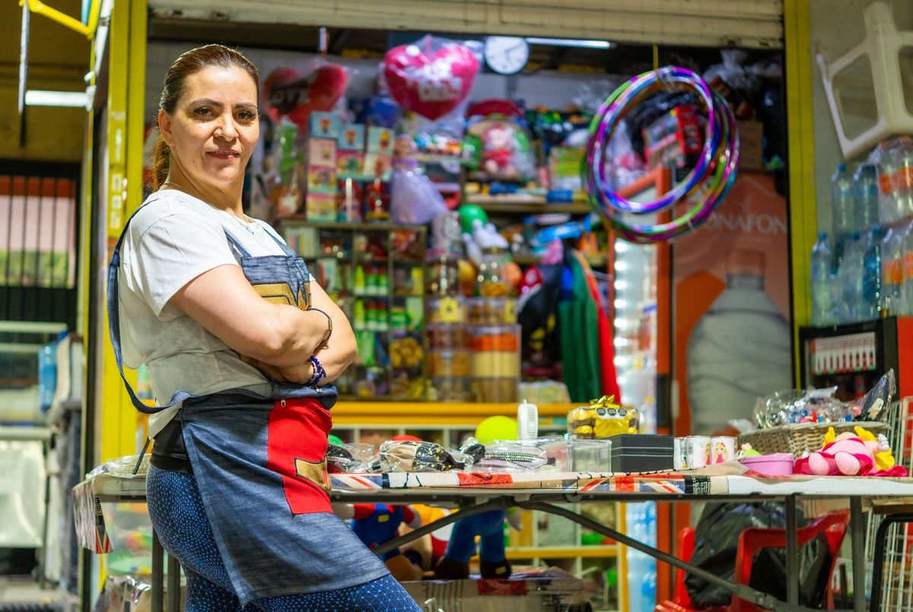
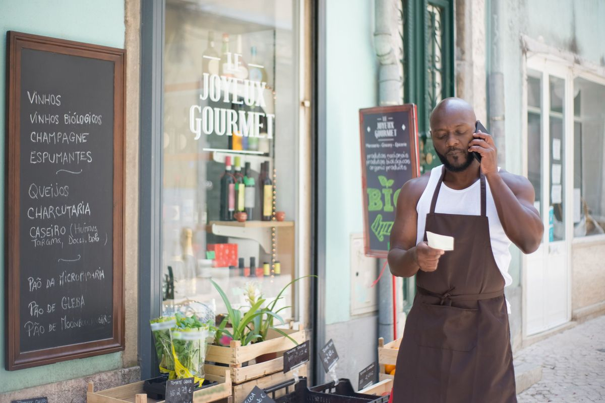

O mundo digital hoje
O dia a dia já passa pela tela
Antes de ir até a loja, muita gente pesquisa no celular. Quem não aparece online pode simplesmente não ser encontrado.
- 🛍️ComércioComparar, escolher e comprar produtos acontece cada vez mais pelo celular e pelo computador.
- 🔎PesquisasO primeiro passo para conhecer um negócio costuma ser uma busca: horários, preços, localização e opiniões.
- 📱Produtos e serviçosClientes procuram o que precisam, de um corte de cabelo a uma encomenda, antes de sair de casa.

Passo a passo
Como funciona para a empresa
Os projetos são desenvolvidos por alunos para que a empresa possa visualizar como o seu negócio ficará no mundo digital.
- 💬1. Conversa
A empresa conta como funciona o negócio e o que gostaria de ter online.
- 🗂️2. Planejamento
A equipe de estudantes organiza o que será feito, em etapas.
- 💻3. Desenvolvimento
Os estudantes constroem o site ou sistema como projeto acadêmico.
- 👀4. Visualização
Você vê o projeto pronto para o seu negócio e conhece as tecnologias usadas.
- 🤝5. Próximos passos
Com o resultado em mãos, a empresa decide como seguir.
O que você ganha
- 💸Sem custosO desenvolvimento do projeto pelos estudantes não tem cobrança.
- 👀Visualize antes de decidirVocê vê o site ou sistema pronto para o seu negócio e decide os próximos passos.
- 🛠️Cuidar do site*Hospedagem e manutenção ficam em uma conversa à parte com a equipe.
* Hospedagem e manutenção (cuidar do site): se o projeto precisar ficar no ar para atender seus clientes, será necessário um serviço de hospedagem mais seguro, em plano pago. Isso deve ser consultado com a equipe que desenvolveu o projeto.

Para quem é
Negócios de todos os tamanhos
Comércio de bairro, alimentação, beleza, artesanato, serviços e profissionais autônomos. Veja, nos projetos, exemplos de contextos que os estudantes já trabalharam.
Quer entender melhor?
Leia as dúvidas frequentes sobre responsabilidade, autorização, LGPD e segurança antes de participar.